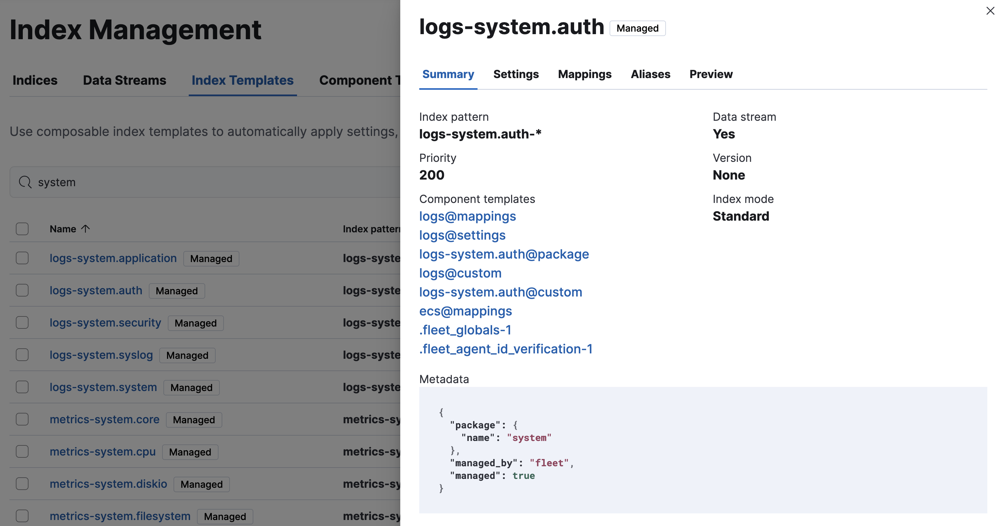
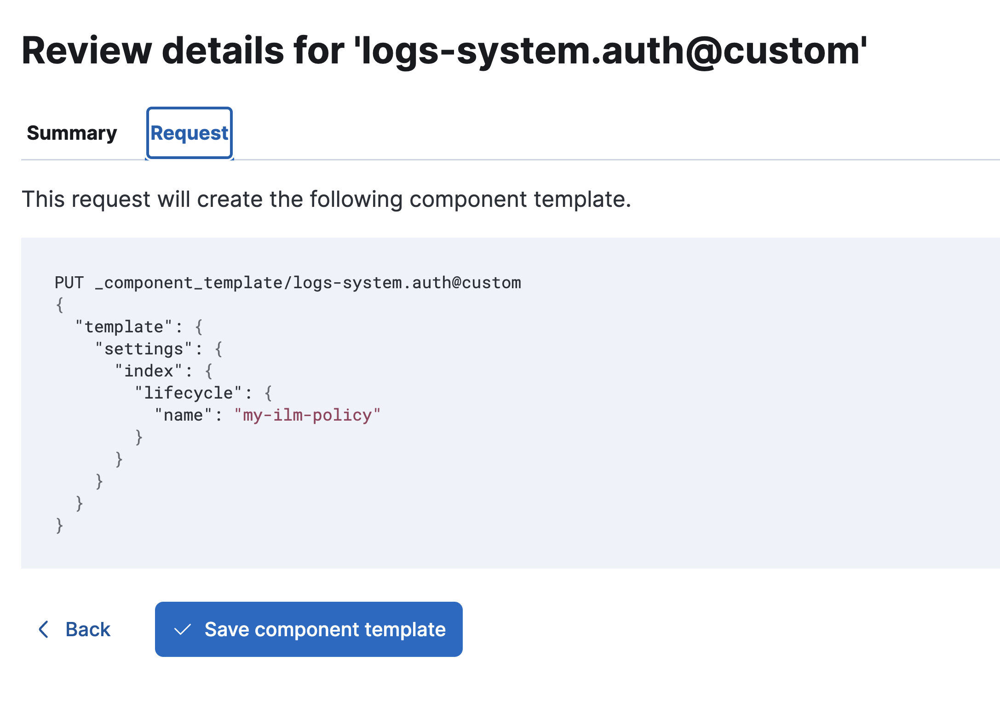

Scenario 2: Apply an ILM policy to specific data streams generated from Fleet integrations across all namespaces
editMappings and settings for data streams can be customized through the creation of *@custom component templates,
which are referenced by the index templates created by the Elasticsearch apm-data plugin.
The easiest way to configure a custom index lifecycle policy per data stream is to edit this template.
This tutorial explains how to apply a custom index lifecycle policy to the logs-system.auth data stream.
Step 1: Create an index lifecycle policy
edit- To open Lifecycle Policies, find Stack Management in the main menu or use the global search field.
- Click Create policy.
Name your new policy.
For this tutorial, you can use my-ilm-policy.
Customize the policy to your liking, and when you’re done, click Save policy.
Step 2: View index templates
editThe Index Templates view in Kibana shows you all of the index templates available to automatically apply settings, mappings, and aliases to indices:
- To open Index Management, find Stack Management in the main menu or use the global search field.
- Select Index Templates.
-
Search for
systemto see all index templates associated with the System integration. -
Select the index template that matches the data stream for which you want to set up an ILM policy. For this example, you can select the
logs-system.authindex template. -
In the Summary, select
logs-system.auth@customfrom the list to view the component template properties. -
For a newly added integration, the component template won’t exist yet. Select Create component template to create it. If the component template already exists, click Manage to update it.
- On the Logistics page, keep all defaults and click Next.
-
On the Index settings page, in the Index settings field, specify the ILM policy that you created. For example:
{ "index": { "lifecycle": { "name": "my-ilm-policy" } } } - Click Next.
- For both the Mappings and Aliases pages, keep all defaults and click Next.
-
Finally, on the Review page, review the summary and request. If everything looks good, select Create component template.

Step 3: Roll over the data streams (optional)
editTo confirm that the index template is using the logs@custom component template with your custom ILM policy:
- Reopen the Index Management page and open the Component Templates tab.
-
Search for
systemand select thelogs-system.auth@customcomponent template. - The Summary shows the list of all data streams that use the component template, and the Settings view shows your newly configured ILM policy.
New ILM policies only take effect when new indices are created, so you either must wait for a rollover to occur (usually after 30 days or when the index size reaches 50 GB), or force a rollover of the data stream using the https://www.elastic.co/guide/en/elasticsearch/reference/8.17/indices-rollover-index.html[Elasticsearch rollover API:
POST /logs-system.auth/_rollover/
Step 4: Repeat these steps for other data streams
editYou’ve now applied a custom index lifecycle policy to the logs-system.auth data stream in the System integration.
Repeat these steps for any other data streams for which you’d like to configure a custom ILM policy.